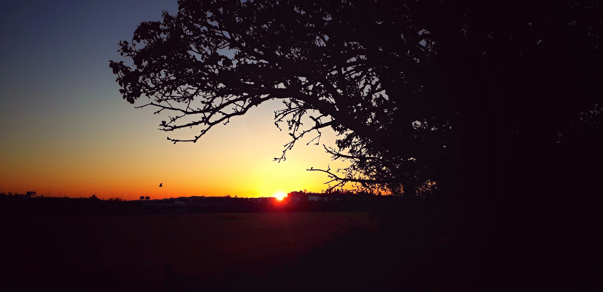
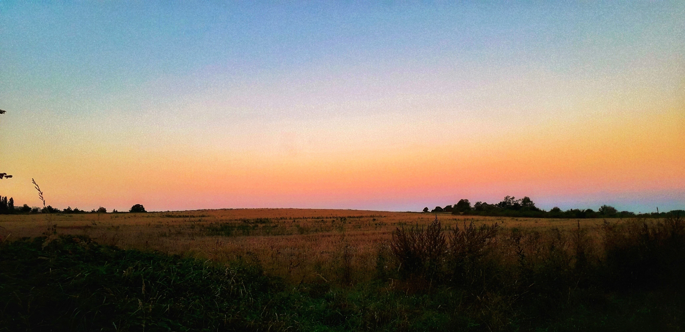
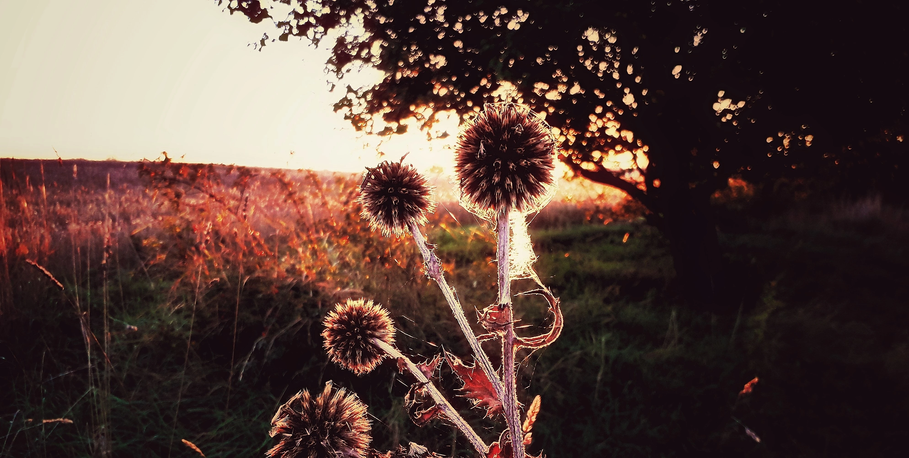
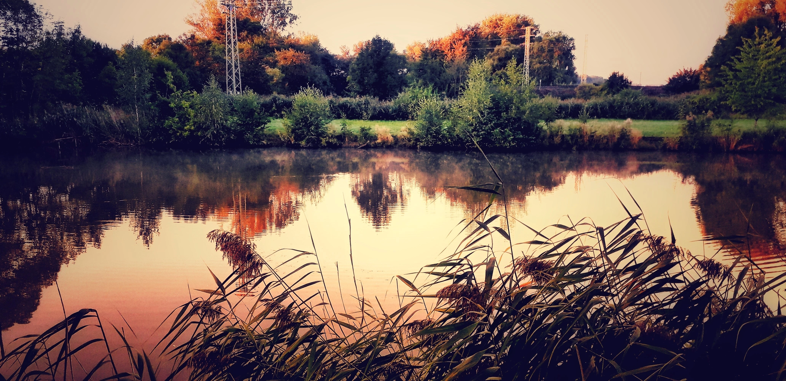
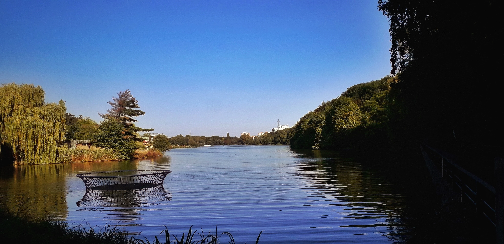
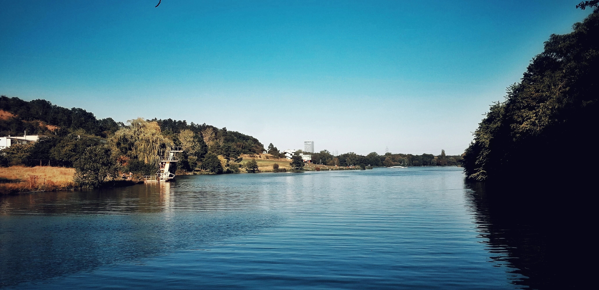
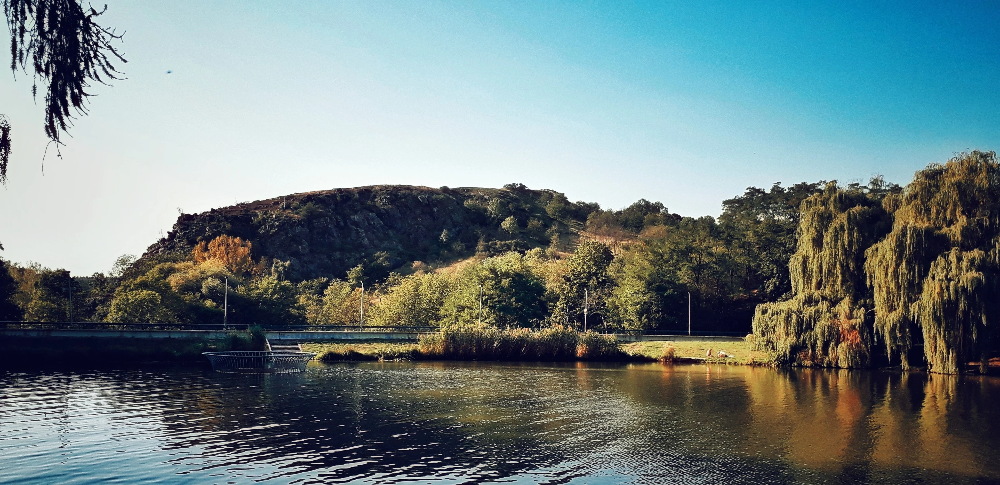
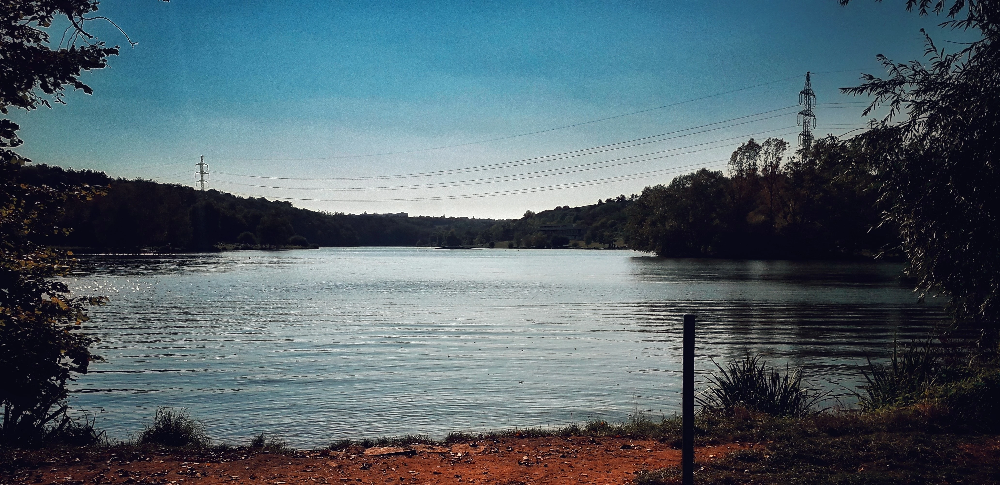
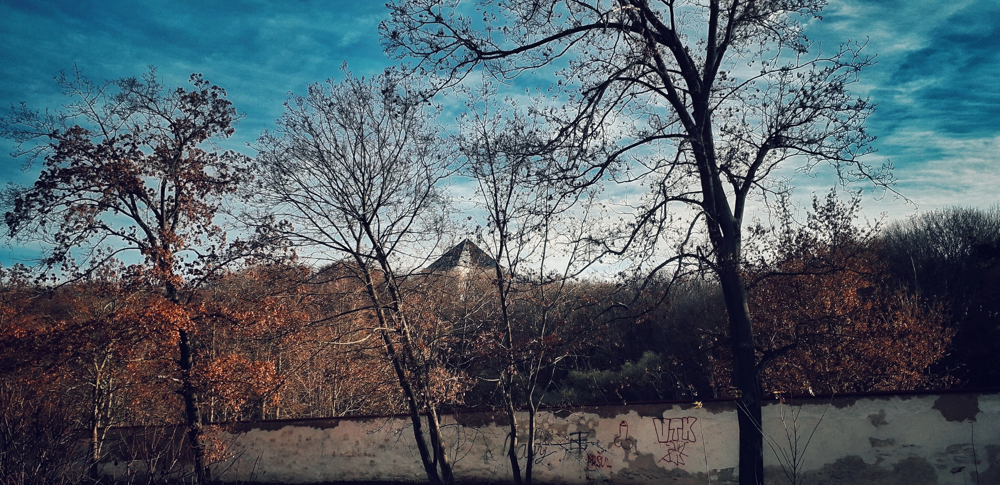
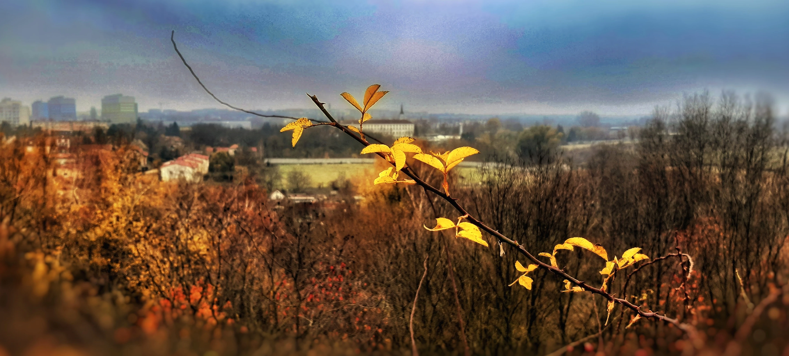

Publikováno: 5. října 2025 │ Autor: Martin · 3 min čtení
Neděle není odměna za přežitý týden. Je to kotva pro ten další.
Když vyjdeš dřív, než se město probudí, uvidíš pod povrchem ruchu světlo, vodu a malé obrazy,
které tě naučí zpomalit. Tohle je můj kousek ticha. Vem si z něj, co potřebuješ.
Buď sám sebou a soustředěný na SEBE

Slunce se dotýká města. Vteřina, která rozhodne, jak ten den povedeš.

Obzor v barvách broskve. Den začíná potichu, tempo dáváš ty.

Trny nejsou problém, když držíš směr. Pavučina drží ticho pohromadě.

Voda neřeší – odráží. Uklidni hladinu a uvidíš víc.

Ticho má tvar. Někdy i kovový – stačí se dívat.

Když chceš skočit, skoč. Ale vědomě.

Pod skalou je klid. Voda ti srovná dech.

I pod dráty vysokého napětí se dá dýchat pomalu.

Klid není sterilní. Je to rozhodnutí uprostřed bordelu světa.

Stačí jeden list do popředí – a chaos vzadu se srovná.